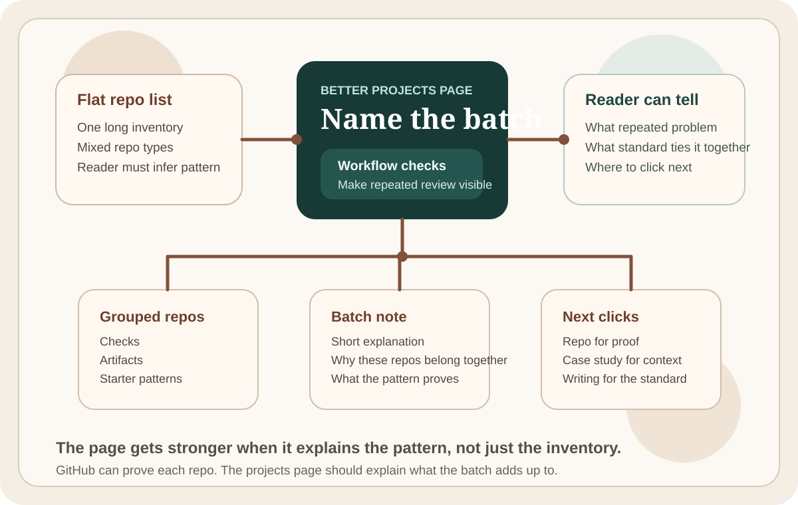

Project Pages Should Explain the Batch
A strong projects page should explain the repeated problem and standard behind a repo batch instead of flattening everything into one inventory.
A flat projects list is easy to publish. It is usually weak at explanation. If someone lands on a projects page and sees a long inventory of repos, they still have to infer what the work adds up to.
That is the part I want the page to do for them.
A projects page should answer what the batch is proving
For a batch of small repos, the interesting question is rarely "how many are there." The better question is what the batch is proving. Is it showing a standard for workflow checks. Is it showing a bias toward reusable artifacts. Is it showing starter patterns that keep one boundary legible instead of pretending to solve the whole system.
That is the level where a projects page starts to help.

Flat inventory makes the repos look more interchangeable than they are
This is the failure mode I keep seeing. Several different repos can all look like small Python tools at first glance. But the reason I made them is not the same.
doc-ship-check and release-note-diff-cli are both small utilities, but they belong to a workflow-check pattern. one-page-canvas and exec-brief-cli are stronger when they are framed around leaving behind a reusable artifact. The OCI Functions starter repos are useful because they stop at one visible handoff and keep the contract clear.
If the projects page does not name those groupings, the reader has to do the organizing work.
The page should connect repos to the standard behind them
What I want instead is simple:
- group the repos by the repeated problem they address
- give each batch one short explanation
- link to one note that explains the standard behind the batch
- let GitHub carry the proof at the individual repo level
That makes the projects page do real routing work. It tells the reader how to read the list.
The best projects pages also hand off to the next layer
The page does not need to become a huge essay. It just needs to make the next move obvious. If a reader wants proof, they can open the repo.
If they want the higher-context version of why the batch looks like this, they can open the short note behind it. If they want the broader product judgment, they can move to the case studies or broader writing. That handoff is what turns the page from inventory into structure.
The bar I keep using
A good projects page should help a stranger answer three questions quickly:
- what kind of repeated problem this repo batch is about
- what standard ties these repos together
- where to click next for proof or context
If the page can do that, the repos stop feeling like a pile and start feeling like a point of view.